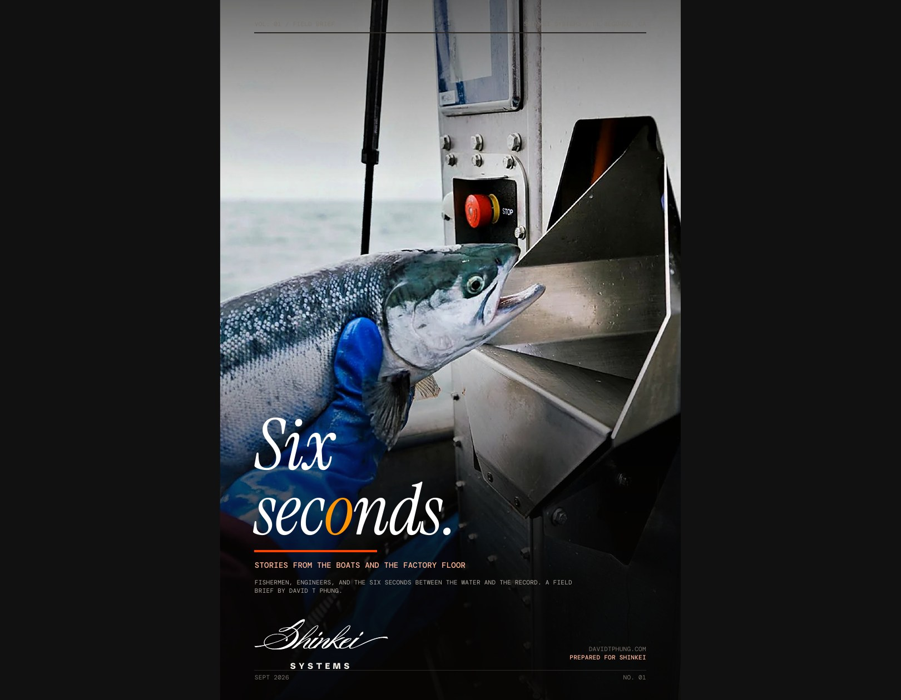

INTERACTIVE READER
SIX
SECONDS.
Stories from the boats and the factory floor. Explore the field brief one spread at a time.

Stories from the boats and the factory floor.
INTERACTIVE READER
Stories from the boats and the factory floor. Explore the field brief one spread at a time.

Stories from the boats and the factory floor.